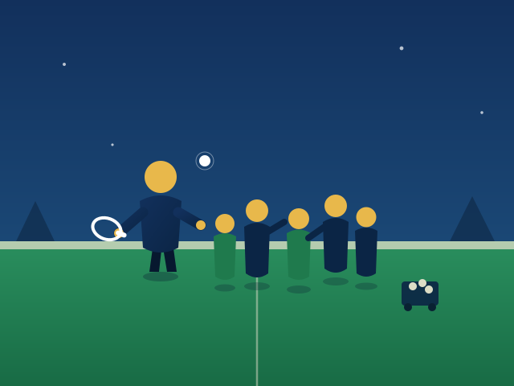
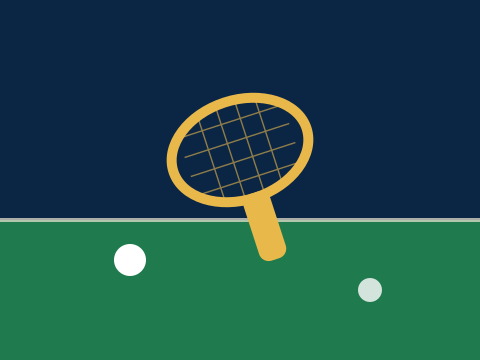
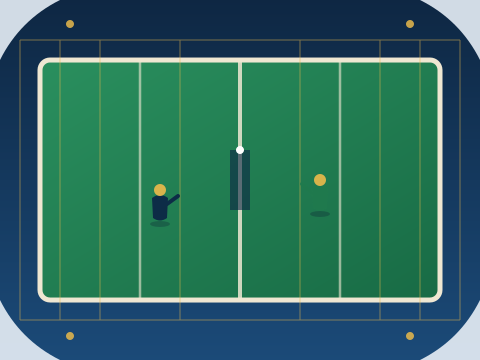

Paddle for Purpose
Turning a tennis clinic into clean water for communities in need.
See the ImpactThree sessions. Fifty kids. One shared court.
I organized and hosted three platform tennis clinics designed to introduce the sport to middle schoolers who'd never picked up a paddle. Across the sessions, we reached 50 kids — teaching fundamentals, running drills, and getting them on court in a winter sport most had never heard of.
To make the coaching count, I recruited the #1 ranked platform tennis player in the country to co-run every session, giving every participant direct access to elite-level instruction most junior players never get.
Co-hosted with the #1 ranked platform tennis player in the U.S.


From the court to clean water
Rather than donate the clinic proceeds directly, the money was put to work — first growing sustainable farms, then growing itself, before reaching its final destination.
Tennis Clinic
Three clinics taught platform tennis fundamentals to 50 middle schoolers.
$3,000 Raised
Clinic registrations and donations raised funds for the program.
Kiva Microloans
Funds became 17 microloans supporting sustainable, low-plastic farming.
Compounded Growth
Repayments were reinvested, compounding the pool to a 110% repayment rate.
Donated to water.org
Final proceeds fund clean water and sanitation access through water.org.
Small loans, sustainable impact
Kiva's crowd-lending model let a single clinic's proceeds support many small farms at once — each loan chosen for its tie to sustainability.
Loans funded farmers adopting practices that cut single-use plastic in packaging and irrigation.
Capital was spread across 17 individual borrowers rather than one lump donation.
As loans were repaid, the returned capital was reinvested rather than withdrawn — compounding the pool.
A 110% repayment rate meant the fund grew before a cent reached its final destination.
Repayment rate includes reinvested returns compounded across the loan cycle — every dollar recovered went back to work before the final payout.
The numbers behind the story

The Final ImpactClean water, closing the loop
The farms behind these loans were chosen for the same reason the fund itself was built: sustainability that compounds. Reducing plastic waste in agriculture protects the same water systems that water.org works to make safe and accessible — clean water and sanitation for communities around the world.
When the loan cycle closes, the final proceeds — the original $3,000 plus everything it compounded into — will be donated to water.org.
A sport became a community. A community became a sustainable investment. And that investment becomes clean water access.